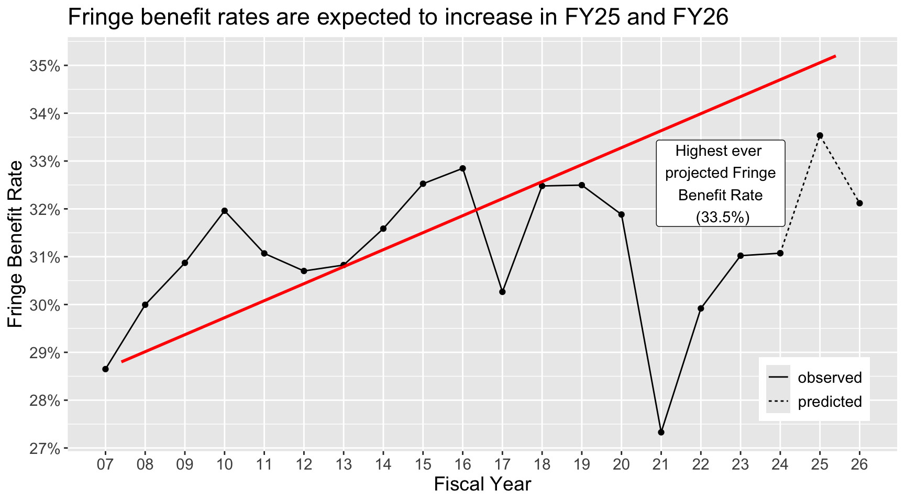
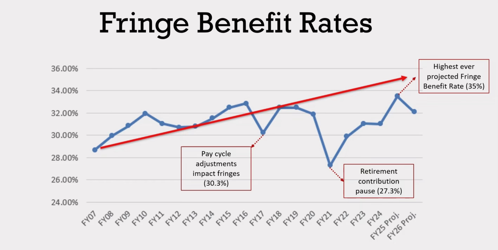
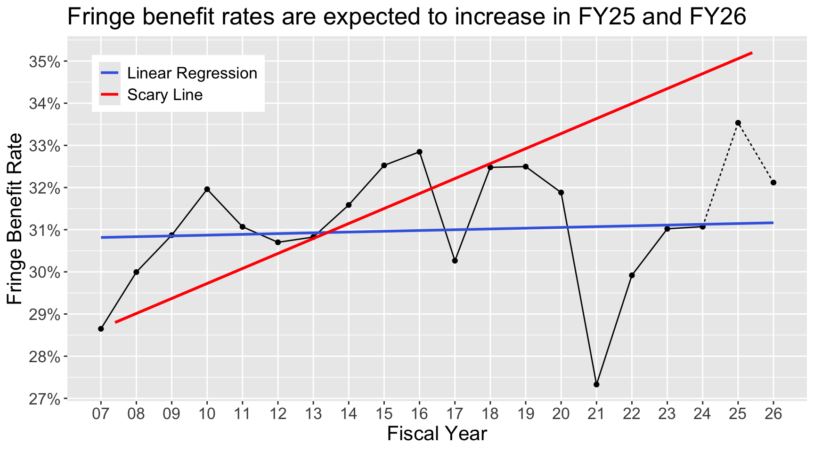
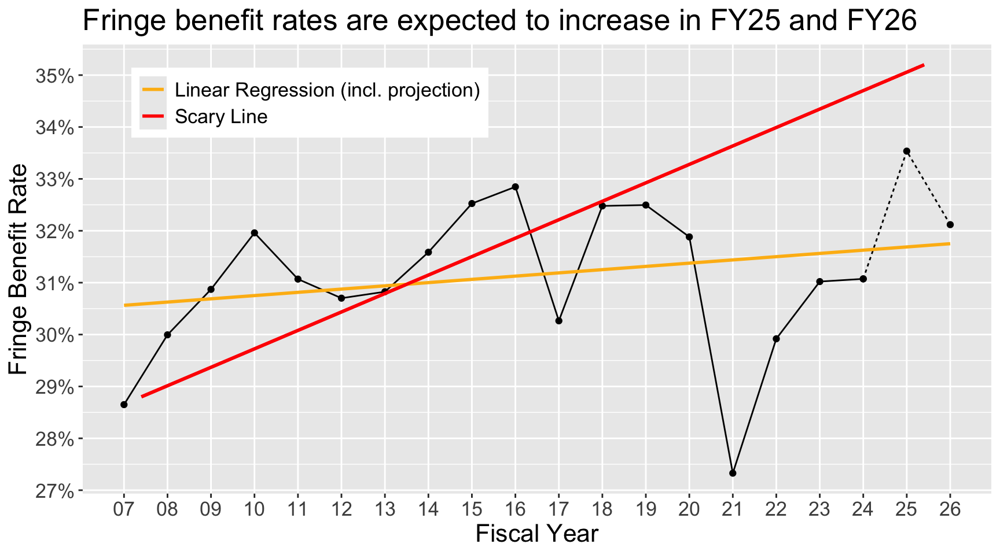
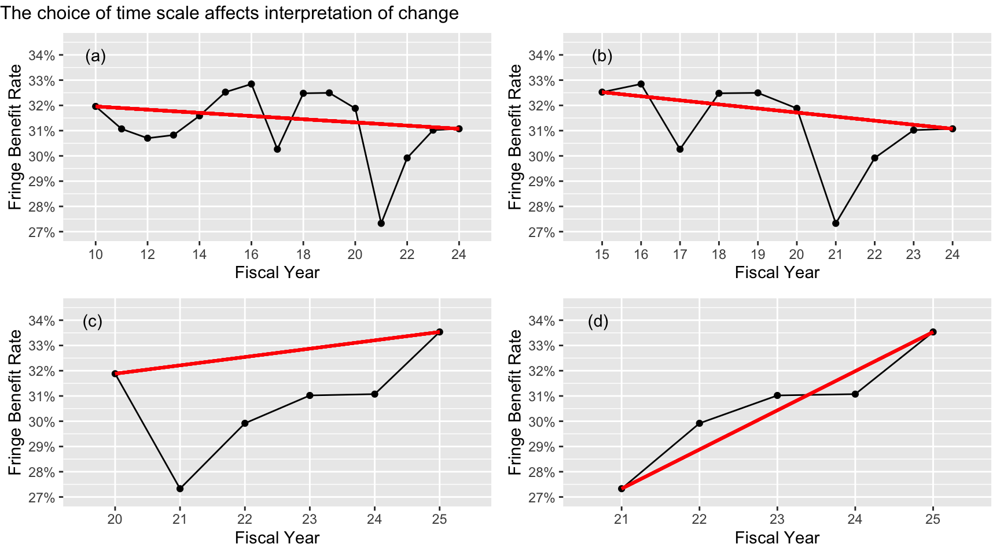
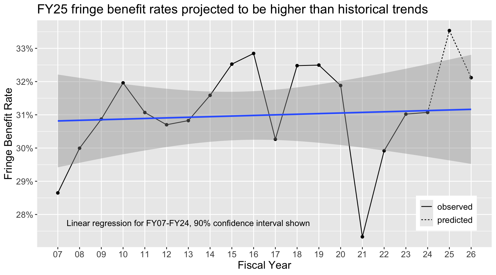

The Dangers of Bad Data Visualization
What is Data Visualization Good For?
I love data science because it transforms data into actionable information. Data, and statistics about that data, can enable smarter decision-making than simply guessing or going with the status quo. Sometimes, statistics are limited. I am not so staunch an advocate for data science that I think there is no place for decision-making outside of mathematical proof. Both science and lived experience are valuable tools for making challenging choices. However, the two should not be confused and most importantly, decision-makers must be clear about which they are using, feelings or facts, especially when they are accountable to outside stakeholders.
One of my favorite classes to teach is Data Visualization, where students learn to use graphics to unveil and communicate underlying patterns within the data. The best data visualizations are clever, well-designed and help answer challenging questions. Data visualizations should “above all else show the data”, put beautifully by the father of modern data visualization Edward Tufte. This does seem like the bare minimum, to show the data and not lie. However, poor data visualization is a Trojan Horse, disguising bad information as scientifically-supported insight. Without critical thinking, consumers of poorly made visualizations let opinions and biases solidify as fact. Stakeholders inherently trust data and are conditioned to accept statistics and visualizations at face value. If a plot insinuates a pattern, it must be there… right?
Above all else show the data
– Edward Tufte, 1983
Misleading Visualization: A Case Study
When I teach this class, we spend lots of time discussing ways to not mislead viewers. I would like to critically delve into one particular visualization to break down some of these areas, discuss the harm these misleading elements cause, and suggest improvements to the visualiation. This visual was presented by university administrators at a faculty meeting discussing budget planning around employee benefits. Specifically, the plot shows the change over time in fringe benefit rate. Fringe benefit rate would be computed as the ratio of non-salary compensation (such as health insurance, retirement, and tution remission) to overall compensation. For example, if my salary were $70,000 and my benefits totalled to $30,000, my fringe benefit rate would be 30%.

There are a number of critiques I would take with this graphic if this were presented as a homework submission by a student, but I will focus on the areas in which this graphic is misleading (read: wrong). Some appear to be intentional, meaning a biased story is being presented as fact, and some are likely not, meaning the way the graphic is designed might encourage assumptions that are incorrect. I am putting this together not as a complaint but as an opportunity for learning2, so I will walk through suggested changes as I go.
- The text callout for FY25 reads “Highest ever projected Fringe Benefit Rate (35%)”, but the data point showing the projection is clearly under the 34% grid line.
- The values for FY25 and FY26 are projections, but the line plot display them identically to the known values.
- The glaring red line showing a huge increase in the fringe benefit rate over time is… curious. This warrants further investigation.
Design Changes
Starting with small fixes, points 1 and 2 are likely the result of a lack of attention to detail or lack of knowledge about data visualization principles. First, the text callout is simply incorrect. I would like to give the benefit of the doubt here and assume that perhaps in another version of the data set, the projection was in fact 35%. If the text callout isn’t tied to that value with code (I assume someone manually added this), then it would be a detail that easily goes unnoticed when preparing a slide deck. This isn’t extremely consequential, but it is disappointing to have such mistakes persist at the highest levels of decision-making. Point 2 is a bit more nuanced and is more understandable because I assume the folks preparing these graphics haven’t taken data visualization courses. Since the values for FY25 and FY26 are not known yet, the best way to present the data is by differentiating the plot in some way. If this is not done, as in the original example, the viewer might too easily draw the conclusion that these are real values, which is incorrect. Presenting both known and unknown vaulues as identical is misleading. Though the error is understandable, I am increasingly confused (and frankly embarrassed of) how administrators are allowed to present information like this with no training or oversight.
Here I have addressed points 1 and 2. I changed the FY25 and FY26 values to dotted lines, which signals to the viewer that this data is a projection rather than known data. I have also tied the text callout to the data itself, so if my numbers updated, so would my plot without having to plan or think. I also made some minor design adjustments to improve the plot’s readability3.
Predicting New Values
Now to investigate the final issue with the plot: the red line. To an innocent viewer, the line seems to be a “best fit” of the data, or linear regression. This would be a very useful way to summarize the pattern shown. For comparison, let’s see what a real linear regression looks like compared to the red line4.

Interesting! The linear regression, based on the real data from FY07-FY24, shows only a moderate increase in the fringe benefit rates, much smaller than the red line would indicate. The slope for this linear regression is 0.018, meaning the fringe benefit rate increases by about 0.018%5 per year over this time. This is compared to the slope of the red line, which works out to be 0.356, or a 0.356%6 increase per year over this time. Comparing the two values, the slope of the red line is about 19 times steeper than that of the true linear regression!
I also want to give the benefit of the doubt again, perhaps this red line is based instead on all the values, including the projected one? I tried this as well, and unfortunately though the slope has increases, it is still nowhere near the red line– the slope is now 0.063.

Visualization Choices are Choices, Not Facts
Here is what I really think happened: the line was drawn to simply connect the earliest and latest reasonable data points, which by some record included a projection for 35% in FY25. I am not certain if the projection for FY25 was either originally 35% and then amended, mistakenly marked as 35% because the line automatically snapped to a whole number, or some other reason. If the purpose of the line is to show the increase from FY07-25, then two horizontal lines highlighting this vertical gap would be appropriate. Using a sloped line to show this change insinuates to the viewer that the angle is important and unbiased, when in fact it is subject to extreme changes in the time choice. See a few examples below where I have varied the time windows to see how the angle of the line, now drawn between earliest and latest data, tells a very different story in each. I could conclude any of the following based off the graphs:
- The fringe benefit rate has decreased somewhat over the past 15 fiscal years.
- The fringe benefit rate has decreased somewhat over the past 10 fiscal years.
- We are on track to have a moderate increase in fringe benefit rates this fiscal year compared to 5 years ago.
- We are on track to have a significant increase in fringe benefit rates this fiscal year compared to 4 years ago.

So, why the choice of line from FY07-FY25? Maybe this is the earliest year data was available, or perhaps this was a concious choice made by the author of the plot. Any choice of time scale is justifiable and reasonable, I am not saying some are true and some are lies. However, presenters should be aware that they affect the story depending on design decisions like axes limits and scales. This is another reason why using linear regression would be a better strategy– the story would not change so significantly if the time scale were off by a handful of years. Including a confidence interval would also show the audience that even though the line might look conclusive, we actually could be very off in our estimate of change. My ultimate version of the plot would look like the following:

This plot shows the data exactly: the observed values are clearly different from the projected values, sound statistics are used to show the historical trend, and a 90% confidence interval shows that the FY25 rates are in fact higher than we could have expected based on the trend. The title also shares the main conclusion, which I believe is true to the plots’ original intention: FY25 fringe benefits are more expensive than normal. It would be important to know how the projections for FY25 and FY26 were computed. I have no doubt (and sincerely hope) that these are estimated by a model more sophisticated than linear regression.
Please Show Your Work
Of course, there is a limit to how clear and unbiased one can be. The audience may still take a different message away from a plot than what was intended. It is also necessary to make some choices that will impact numbers and visuals, like the starting time of the plot for example. My request to institutional decision-makers is no more than I would expect from my students– where there is choice, nuance, and uncertainty: please show your work. Let me know where you obtained the data, what assumptions you made (with justification!), and the process you used to obtain your solutions.
There have been an increasing number of errors and omissions like this, both in visualization and in the presentation of statistics, shared from the highest leadership at the university. In nearly every university-level data presentation I have attended, I see at least one instance of extremely poor data communication. Incorrect and misleading visualizations, inaccessible graphics, and indigestibly large tables instead of a thoughtful graphic are all common. In some situations, claims completely unsupported by any data are touted as facts. Whether it is from a lack of knowledge of best practices or simply a lack of concern for correctness and clarity, I implore administrators to do better.7 These presentations, numbers and conclusions are used to make decisions that impact thousands of jobs and educational journeys. Misleading the audience to think that these conclusions are supported in the data is simply unacceptable.
Footnotes
I scraped the data from this visualization using Plot Digitizer, which allows you to set the scale of your plot and select data points to extract. I extracted the start and end of the red line as well as each each fringe rate from the blue line, and rounded the years to be integers 7-26. No other preprocessing was done. There will be a small amount of error with this. If someone is able to provide the original data, I would be happy to correct this with exact values. All computations are tied to my code so it can be easily updated.↩︎
I am not ignorant of how this post may come across to administrators (and am acutely aware of my position here as non-tenured faculty). I want to emphasize that my goal here is to encourage better data practices in decision-making. If you have comments or concerns about what I have shared, please share them with me via email.↩︎
I adjusted the y-axes limits to be zoom into the data, maximizing how the plot space is used, and added extra grid lines for more accurate readability. I edited the x-axis tick labels by removing the “FY”, which increases the data-ink ratio, turning the labels horizontal for readability, and including tick marks to place the year more accurately. I also added a descriptive title to tell the audience explicitly what I want them to understand, which will decrease the chances that they make alternative conclusions or miss the main point.↩︎
Best practices would have us include a confidence interval, which I have intentionally omitted here to keep the discussion as simple as possible.↩︎
Be careful to note that percent here is in line with the original variable,
percent benefit as compared to salary, not percentage increase of the rate compared to the previous year. Therefore, we should interpret this as in this example: if in FY24 the fringe benefit rate is 31.1%, this linear regression would predict the FY21 fringe benefit rate to be 31.118%.↩︎Unfortunately, this percent may also be confusing as it is very similar to the listed projected benefit rate. Again, if in FY24 the benefit rate is 31.1%, the projection would now be 31.456.↩︎
Are you an administrator reading this and wanting to improve but not sure how? I would love to help form a plan for training so that these occurences decrease, please get in contact with me or another Data Science faculty colleague.↩︎